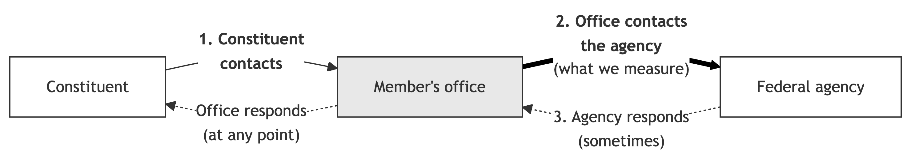
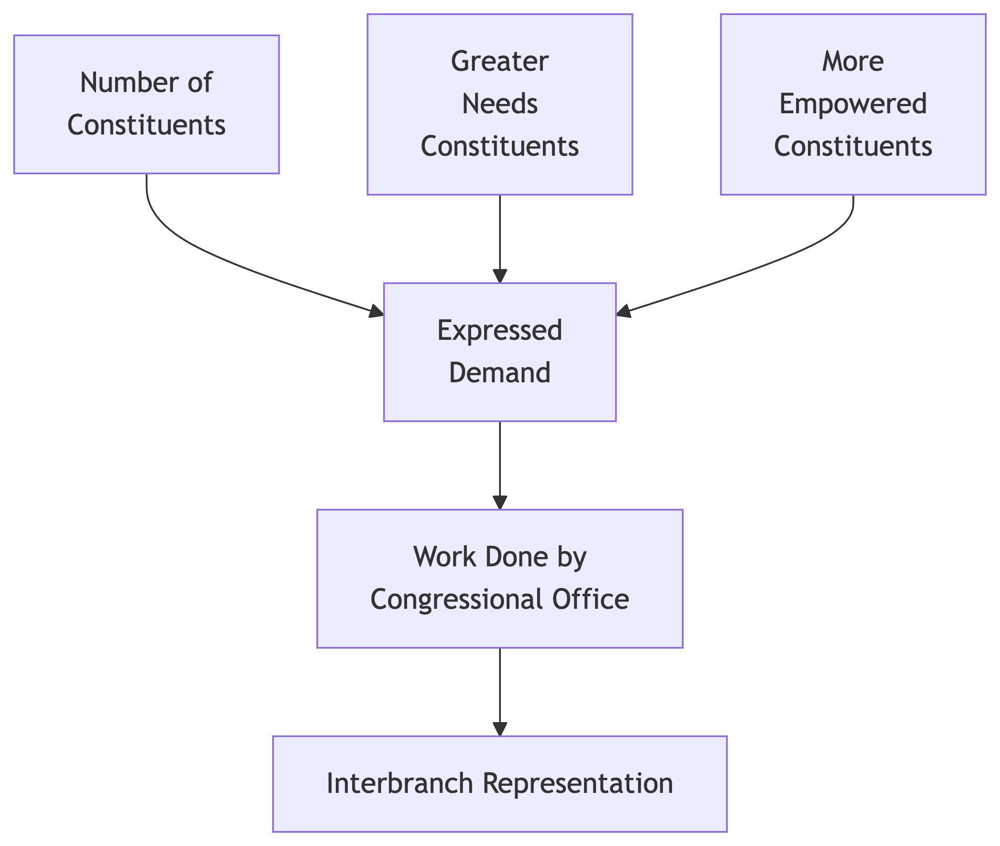
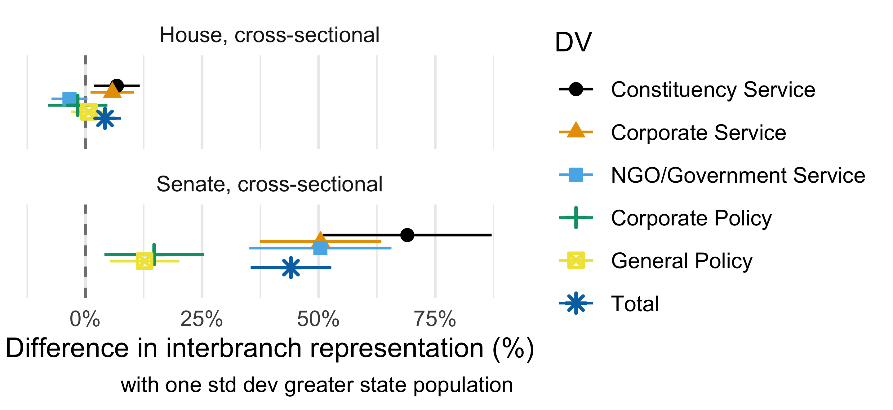
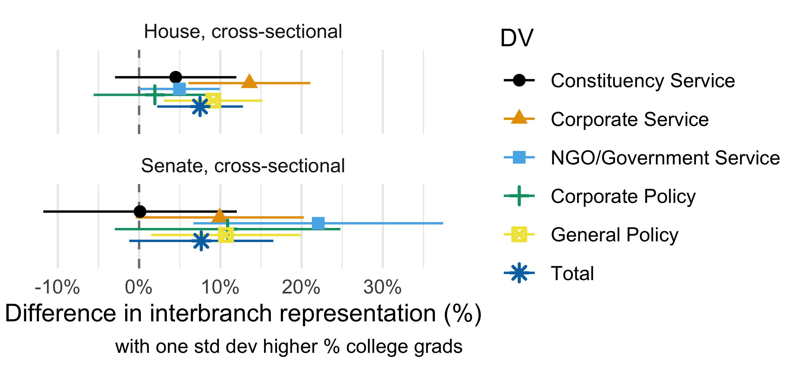
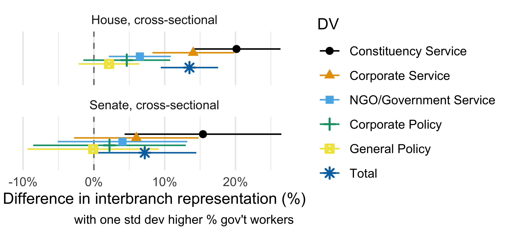
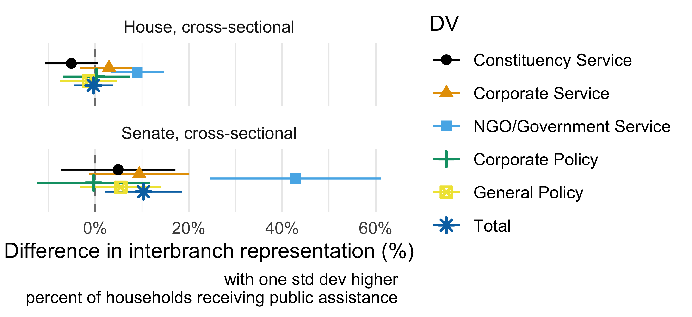

5 How Constituent Demand Affects Interbranch Representation?
ABSTRACT: How does constituent demand shape interbranch representation? Because Congress does not make constituent requests public, we cannot observe demand directly. Instead, we test whether interbranch representation varies with three possible sources of variation in constituent demand that we can measure with Census data: how many constituents a legislator represents, how many are empowered to seek help, and how many need help from the federal government. We find that each of these sources of demand shapes interbranch representation, but the type of work depends on where the demand comes from. The number of constituents shapes constituency service more than policy work, though senators from larger states do far more of every type of interbranch work. One complication here is that state population is bundled with larger office budgets in the Senate, which may increase their capacity—a topic we focus on in the following chapter. Empowered constituents generate different kinds of work: legislators with more government workers do more constituency service, while those with more college graduates do more policy work. Finally, legislators representing households with greater need do more work on behalf of nonprofits and local governments, but not more constituency service for individuals. For greater-needs individual constituents, the disempowerment associated with greater needs outweighs the need-based reasons to reach out, such that the needs of low-income constituents reach Congress largely through organizations rather than individual requests.
In Chapter 2, we introduced constituent demand as one of the three core elements of our framework of interbranch representation, along with Hypothesis 1: legislators with more constituent demand will do more interbranch representation. This chapter tests what role constituent demand plays in legislators’ interbranch representation.
Constituent demand is, in many ways, a natural starting point for our discussion, because some types of interbranch representation—namely all types of constituency service—typically originate with a request from a constituent (individual, company, nonprofit, or local government). Figure 5.1 visualizes the constituent’s role in this process. Constituents set the ball in motion by contacting a member’s office via email, phone, online form, or an old-fashioned letter. A caseworker in the member’s office receives the communication and decides how to respond. Many constituent messages are about non-casework issues—for example, expressing the constituent’s policy preferences and encouraging the legislator to take some legislative action. Other constituent issues are about state or local issues outside the legislator’s purview. In both those situations, the caseworker may respond to the constituent on behalf of the legislator, but they do not require reaching out to a federal agency. Our focus here is on the type of constituent contacts that urge legislators to take interbranch actions and reach out to the federal agency. The member’s office contacting the agency (step 2 in the figure) is what we call interbranch representation. In many cases, the agency will respond to the member’s office (step 3), and then the office will respond to the constituent. Not all letters from members to agencies require responses from the agency. Similarly, the member’s office may respond to the constituent at any point in this process—before they contact the agency, after they contact the agency, or after they hear back from the agency.
Interbranch policy work, unlike constituent service, need not originate with a constituent request. Constituents may ask legislators to engage in what we would code as policy work, but legislators may also initiate interbranch policy work absent constituent demand. For this reason, we expect constituent demand to be more closely tied to interbranch constituency service work than interbranch policy work.
A challenge, however, for any scholar interested in studying constituent demand is that it is an unobservable black box. We cannot directly observe the number of requests for help legislators receive from their constituents (what we call constituents’ expressed demand), because Congress does not make such records public. Demand for interbranch representation, particularly constituency service, is also difficult to predict given the variety of activities it encompasses. Beyond the number of constituents a legislator represents, demand for individual constituency service arises from the confluence of several factors: how much constituents interact with the federal government, the problems that arise from those interactions, whether constituents know their legislator can help, and whether they are able to advocate for themselves. Even accounting for the number of constituents who use federal programs, it is nearly impossible to predict the problems they might encounter.
We develop hypotheses about three sources of constituent demand: the number of constituents a legislator represents, how many are empowered with the knowledge and resources to seek help, and how many have greater need for help from the federal government. Each source corresponds to a sub-hypothesis of Hypothesis 1. As Figure 5.2 shows, we expect each source to shape the expressed demand (requests for help) that congressional offices receive, which shapes the interbranch representation they provide. But constituents with the greatest need for help are often the least empowered to seek it, so need and empowerment may work against each other. Although we cannot observe expressed demand directly, we can observe its sources, each of which we measure with one or more indicators from U.S. Census data. Our tests therefore capture whether a source of demand is associated with more interbranch representation, which depends both on whether it generates requests and on whether offices respond to them.

In the sections that follow, we develop each source of demand and its sub-hypothesis and describe our measures, before turning to results for each of our five types of interbranch representation. To preview our results, we find that demand shapes interbranch representation, but the type of work depends on where the demand comes from. Senators from larger states do substantially more of every type of interbranch work, and even in the House, where districts are nearly equal in size, members from larger districts do more constituency service. Empowered constituents generate different kinds of work: legislators representing more government workers do more constituency service in both chambers. Those representing more college graduates do more policy work and more corporate and nonprofit constituency service. Finally, legislators representing more households on public assistance do more work on behalf of nonprofits and local governments, especially in the Senate, while House members representing more of these households do less individual constituency service, suggesting that disempowerment outweighs greater need for help, resulting in likely fewer individual requests for assistance from those constituents. Instead, need reaches Congress largely through organizations, and results in greater assistance for nonprofits and local governments.
5.1 Three Sources of Constituent Demand
Number of Constituents
The first and most straightforward component of constituent demand is the number of constituents. We view this as a mechanical relationship. If X proportion of constituents encounter problems with the federal government, the more constituents one represents, the more constituents one will represent who encounter problems with the federal government. While the number of constituents represented by United States Representatives is roughly equivalent, U.S. senators represent states with a wide range of state populations. The more people a legislator represents, the more problems they are likely to encounter with the federal government, and thus the greater demand for interbranch representation. While an intuitive argument, little empirical evidence exists to support it. Drawing on data collected by the Commission on Administrative Review (1977), and augmenting it with additional data collection of his own, Johannes (1984) found a weak positive relationship between state population and senators’ constituency service caseloads in the late 1970s.
While not explicitly focused on the issue of constituency demand, there is a body of research examining the impact of state population (constituency size) on Senate representation, demonstrating the opposite relationship between population and representation (Oppenheimer 1996; Lee 1998; Lee and Oppenheimer 1999). Perhaps of greatest relevance, Oppenheimer (1996) found that constituents from more populous states have less contact with their legislators across a variety of survey measures (meeting the incumbent personally, attending a meeting where the incumbent spoke, speaking with a staff member, receiving mail from the incumbent, and contacting the incumbent). Of particular interest for our purposes here, he found substantial variation in constituents seeking help with a problem by state size. Constituents from more populous states were much less likely to report seeking help with a problem or information from their Senators (Oppenheimer 1996).
How do we reconcile our intuition about greater population leading to greater constituent demand with the existing literature demonstrating constituents from less populous states receiving better representation? We think those studies are capturing representational outcomes, which are functions of the legislator’s office capacity and member choices about what to prioritize. Thus, we argue that representing more constituents will be associated with higher levels of interbranch representation.
Hypothesis 1A (Number of Constituents). Legislators who represent more constituents will be associated with higher levels of interbranch representation.
Before moving on to our next component of demand, we will note two complications that limit the conclusions we can draw about constituent population: (1) constituent population only meaningfully varies in the Senate, and (2) the amount of money senators receive to run their offices is a function of state population. Thus, state population in the Senate is a somewhat bundled treatment that includes both increased population and an increased office budget.1
Empowered Constituents
Conceptually, we might imagine that constituent demand could vary for reasons other than population and underlying need for service. As former Congressman and political scientist David E. Price noted when describing his experience representing North Carolina’s fourth district, “…constituents vary considerably in their ability and inclination to use it” (Price 2022). A constituent encountering a problem with the federal bureaucracy needs to know that they can reach out to their congressional representatives for assistance with such problems, know how to do so, and then have the time and energy to follow through and reach out to them. None of the linkages in that chain should be taken for granted. A large body of work demonstrates how ill-informed most Americans are about basic political facts, and how knowledge is unevenly distributed across the American public (Delli Carpini and Keeter 1996; Lupia 2016).
Much less is known about how well informed the American public is regarding casework and constituency service support that they can receive from members of Congress. While systematic empirical evidence regarding knowledge of casework support is surprisingly lacking, our personal conversations with friends, family, and well-informed professional political scientists suggest that many people would not think about contacting their elected representatives when encountering problems with the bureaucracy. We can, however, turn again to the evidence from the Commission on Administrative Review (1977). Using these data, and augmented with additional data collection of his own, Johannes (1984) found a positive relationship between the number of government employees in a district (perhaps those most likely to know how to navigate the federal government) and constituency service caseload in the House, but no relationship in the Senate. Meanwhile, district education had an inconsistent and surprising negative relationship, contrary to resource-based arguments.
A small body of research has used survey data (1977-1980) asking if the respondent has reached out to their legislator for help (constituency service) and attempted to examine both the empowerment and need hypotheses (Yiannakis 1981; Johannes 1984). Yiannakis (1981) found that at the individual level, high income, higher education, prior contact with the member, and knowing someone who has requested help were all positively associated with requests for constituency service. Johannes (1984) found inconsistent relationships between constituent demographics and requests for assistance, in contrast to the strong relationships he found between constituent demographics and expressing political or policy opinions to the member.
Existing literature has more consistent findings, however, about what factors are associated with constituents contacting their legislators in general, in the sense that the contact could be about expressing an issue position or requesting casework support, as well as general participation in politics.2 Verba et al. (1995)’s canonical Civic Voluntarism Model suggests that citizens need both the motivation and capacity to participate, with constituents with higher socio-economic status (particularly education) being most likely to speak up.
We are building on these findings (Verba et al. 1995) to argue that legislators who represent more constituents who are informed about how to seek help and what the government can help with will do more interbranch representation. Empowerment is shaped by education, resources, and knowledge of how government works. Constituents with more education, as well as government workers, who are particularly well positioned to know how to seek help from the federal government, are likely to be highly empowered. Constituents receiving low-income benefits, by contrast, are likely to have fewer resources and less knowledge of where to turn, and thus lower empowerment. Empowered constituents likely increase the demand for all types of work from a congressional office. However, they may be higher policy demanders than constituency service demanders, leading to more policy-focused interbranch work in districts with more empowered constituents. This would be consistent with Johannes (1984)’s finding that constituent demographics more strongly predict expressing policy opinions than requesting casework.
Hypothesis 1B (Empowerment). Legislators who represent more empowered constituents (those with the knowledge and resources to seek help) will be associated with higher levels of interbranch representation. Conversely, legislators whose constituents are less empowered will be associated with lower levels of interbranch representation.
Many examples from our data suggest that constituents’ levels of knowledge about contacting their legislators would have some bearing on the amount of interbranch representation that legislators provide. Surprisingly, some letters that legislators sent to agencies on behalf of individuals appear to be unrelated to casework and instead focus on expressing individuals’ opinions on matters relevant to a particular agency. Many of these letters were sent by legislators to the FDA and involved concerns or problems that constituents had with medications or medical devices. For instance, Connie Mack (R-FL) sent a letter on behalf of a constituent who said that her son nearly died from taking Motrin; the constituent was asking the FDA to update the drug’s label to include warnings about these adverse effects. Robert Byrd (D-WV) sent the FDA a constituent letter that appeared mostly related to policy. Per the FDA’s summary of the correspondence, the constituent was urging Senator Byrd not to co-sponsor a bill that Senator John McCain (R-AZ) had introduced, called the Dietary Supplement Safety Act, because they opposed giving the FDA additional regulatory authority over supplements. However, the summary also mentioned that the constituent believed the FDA should do more to combat the use of steroids.
As another example, several legislators wrote to the National Park Service on behalf of constituents with concerns or complaints about events in national parks. Chris Van Hollen (D-MD) wrote regarding a constituent’s concern about the “canceled Soup Run 5K at East Potomac Park”; Tim Kaine (D-VA) wrote on behalf of a constituent who was concerned about in-line skating occurring in Fredericksburg & Spotsylvania National Military Park; and Ron Barber (D-AZ) shared a letter from a constituent who was requesting information about the agency’s actions to make Saguaro National Park safer for cyclists. Rather than indicating a significant need for assistance or describing personal problems that constituents were facing, these letters suggest that constituents felt empowered to take these complaints to their member of Congress.3 Overall, these constituents had enough knowledge about the process of contacting their legislators (and the connection between members of Congress and federal agencies) to reach out with these concerns. Some degree of political knowledge or education among constituents is therefore likely to be related to the amount of interbranch representation that legislators provide.
It is also clear from our data that a significant amount of individual constituency service involves federal employees and the issues that they may be facing with the federal government. Although federal employees tend to be concentrated in the D.C./Maryland/Virginia area, some agencies like the TSA employ individuals all over the country. In 2018 alone, legislators including Bob Casey (D-PA), Dan Sullivan (R-AK), Richard Neal (D-MA), Josh Gottheimer (D-NJ), Dianne Feinstein (D-CA), and Maggie Hassan (D-NH) wrote to TSA about issues involving current or prospective employees of the agency. A similarly wide array of legislators, such as Andy Barr (R-KY), Mike Bost (R-IL), Vern Buchanan (R-FL), and Buddy Carter (R-GA), wrote to the U.S. Marshals Service on behalf of constituents who were current or retired employees of the agency. These cases illustrate why government workers, who know how federal agencies operate, are likely to be empowered constituents.
Constituents in Need
The last component of constituent demand in our framework is constituent needs. Some constituents might have a greater need for help from the federal government. While the previous section focused on constituents who, in the Verba et al. (1995) framework, have greater or lesser capacity to contact their legislators, in this section we focus on constituents who have greater motivation to contact them because they have greater needs. Such constituents are those who might be struggling with major problems — lower income, food insecurity, housing insecurity, immigration status issues, and other issues with a strong presence in their daily lives. On the one hand, these constituents have the greatest needs, and in the Civic Voluntarism framework, they also have greater motivation to speak up. But on the other hand, as we discussed in the previous section, these very traits are also correlated with potentially limiting their capacity and resources to speak up (low empowerment). These constituents with the greatest need might be the least likely to know where to appeal for help, and might be the least able to devote time and resources to seeking help (Verba et al. 1995).
There is little direct evidence examining exactly this question on constituent demand. Jones et al. (1977) found support for a “parabolic” model of constituent need in a local government context, in which individuals in the middle of the income distribution, who have both enough need and enough knowledge, were more likely to contact public officials for help. Other studies, however, have largely failed to replicate these results. Johannes (1984) examined the relationship between the median income in a district and constituency caseload requests for help, and found a weak and inconsistent positive relationship. Using survey data from this same period, Johannes (1984) found no relationship between the respondent’s self-reported economic hardship or income and contacting one’s member of Congress for casework assistance. Drawing on similar survey data, Yiannakis (1981) found a positive relationship between the respondent’s income and likelihood of contacting one’s congressman for casework assistance, suggesting that not having the knowledge/resources to reach out may outweigh the need itself.
Hypothesis 1C (Need). Legislators who represent constituents with greater needs will do more interbranch representation for individuals, nonprofits, and local governments.
Anecdotes from our data illustrate how need and empowerment interact. Some constituents with clear economic needs also had the knowledge to pursue help through multiple channels, contacting two of their legislators (often both of their senators) about the same issue. One constituent wrote to both Mike Rounds (R-SD) and John Thune (R-SD) in July 2016 asking for help, “requesting that IHS [the Indian Health Service] review his PRC denial and pay for his outstanding bill.” At the same time, both Jack Reed (D-RI) and Sheldon Whitehouse (D-RI) wrote to the IHS on behalf of a constituent asking the agency to “investigate her situation” regarding her loan forgiveness award. These constituents had real needs, but they also knew that their senators could help and how to ask. Such cases show that need alone does not generate requests; it does so when constituents also have the knowledge and resources to seek help. Whether need or low empowerment dominates among constituents facing economic hardship is therefore an empirical question, which we test using the share of households receiving public assistance (Table 5.1).
5.2 Measuring Demand
We measure each source of demand with estimates from the U.S. Census Bureau (Census 2026). For the number of constituents, we use the estimated population of each state and congressional district. For empowerment, we use the percentage of constituents with a bachelor’s degree or higher, following the Civic Voluntarism Model (Verba et al. 1995), and the percentage of workers employed by federal, state, or local government who are more likely to know what congressional offices can do for them. For need, we use the percentage of households receiving public assistance or SNAP. Table 5.1 summarizes these indicators and what each predicts. The share of households receiving public assistance or SNAP appears under two hypotheses because need and empowerment make opposite predictions about it: need predicts more individual constituency service and low empowerment predicts less.
The three components of constituent demand we have discussed here are by no means comprehensive. Further complicating this picture is that legislators appear to use capacity to generate demand through advertising and informing their constituents about ways they can help (Yiannakis 1981; Blackwood 2026)—either for strategic reasons or just because they believe normatively it is the right thing for them to do.
| Indicator | Sub-hypotheses of Hypothesis 1 (Demand) | ||
|---|---|---|---|
| Hypothesis 1A (Number) |
Hypothesis 1B (Empowerment) |
Hypothesis 1C (Need) |
|
| State/district population | ↑ all types | ||
| % college graduates | ↑ individual service, corporate service, all policy work | ||
| % government workers | ↑ individual, nonprofit/local gov’t service, general policy work | ||
| % households on public assistance or SNAP | ↓ individual service, all policy work | ↑ individual, nonprofit/local gov’t service | |
5.3 Results
To estimate how each source of demand relates to interbranch representation, we model the number of contacts of each type that a legislator’s office makes with federal agencies in a given year. The unit of analysis is the legislator-agency-year, and because the outcome is an overdispersed count, we estimate negative binomial regressions with standard errors clustered by legislator. Each model includes all four demand indicators together and the same set of controls for capacity and incentives. The capacity controls are experience in Congress (three or more years), experience in a state legislature, committee chair, subcommittee chair, ranking minority committee member, and reporting committee member. The controls related to strategic incentives include whether the legislator faced a competitive prior primary, a competitive general election, their party, the president’s party, their perceived ideological distance from the agency, and the president’s party × perceived Distance, and the absolute value of their first-dimension NOMINATE “ideology” score.
All models include agency-year fixed effects to account for common shocks that may affect all congressional offices in a given year or all records from a given agency in a given year, as well as uneven responses to our FOIA requests over time. To estimate within-legislator changes over time (difference-in-differences), we add legislator-agency fixed effects and remove time-invariant controls. We estimate separate models for the House and Senate because district populations, office budgets, and constituencies differ between the chambers. We also estimate a pooled model, with a parameter to capture average chamber differences.
Standard errors are clustered at the legislator level. The full regression equations and tables are available in Appendix Appendix C.
Because we are interested in why some constituencies receive more interbranch representation than others, and because these demographic characteristics change little from year to year, all models in this chapter are cross-sectional. To make the effect sizes comparable across dependent variables and predictors measured on different scales, we report marginal effects in percentage terms. For binary indicators, this is the estimated percent change in expected requests associated with that indicator. For continuous variables, this is the estimated percentage change with a one-standard-deviation increase in the predictor.
Computing average counterfactual comparisons involves four steps:
Compute predictions for every row of the dataset in the counterfactual world where all observations belong to the comparison condition. Compute predictions for every row of the dataset in the counterfactual world where all observations belong to the counterfactual condition. Take the differences between the two vectors of predictions. Average the unit-level estimates across the whole dataset.
Standard errors are obtained via the delta method (see Arel-Bundock et al. 2024, chap. 6).
Each figure below shows these estimated differences for one indicator. These figures are labeled “marginal effects,” describing the method of counterfactual estimation, but are better understood as average differences for cross-sectional models. Points mark the estimated percent difference for each of the five types of interbranch representation, horizontal lines show 95% confidence intervals, and the upper and lower panels show the House and Senate, respectively.
More Constituents, More Interbranch Representation
Consistent with Hypothesis 1A, legislators who represent more people do more interbranch representation (Figure 5.3). The relationship is largest in the Senate, where a one standard deviation increase in logged state population is associated with about 70% more individual constituency service, 50% more corporate service, and 12–13% more of each type of policy work. Because Senate office budgets grow with state population, these estimates combine demand and capacity; we return to this in Chapter 6.4
The House offers a cleaner test because there is variation in population, but, importantly and unlike in the Senate, House staff budgets are unrelated to district population, thus letting us more cleanly identify the impact of the number of constituents on interbranch representation.5 The idea of House districts varying by population may seem counter-intuitive because House districts are designed to have equal populations, but there is variation. Variation in House district populations is driven by three factors: (1) apportionment guarantees every state at least one seat, so states with a single at-large district, like Wyoming and Vermont, can have populations well below the average district, (2) some districts grow faster than others between censuses, and (3) rounding in the apportionment process creates additional variation across states. Population differences are, however, more modest across House districts than across states. Even so, members from slightly larger districts do about more individual constituency service and more corporate service — 6% more with a one standard deviation increase in logged population.6

Empowered Constituents Seek Different Kinds of Help
Hypothesis 1B predicts that constituents with the knowledge and resources to contact Congress generate more demand, which would translate to more interbranch representation. We find that the percent of college graduates in a district is associated with more general policy work, about 10% more per standard deviation in each chamber (Figure 5.4), but we see no statistically significant differences in individual constituency service.7 This suggests that educated constituents may act more as policy demanders than as casework clients, as we anticipated. College graduates are also associated with more corporate service and more nonprofit and local government service.

Turning to our other measure of empowerment, we find that government workers are associated with more individual constituency service in both chambers and, in the House, more service for businesses, nonprofits, and local governments (Figure 5.5). With a one-standard-deviation difference in percent of government workers, we see 15-20% more individual constituent service, smaller increases in the House for other types of constituent service, with a 7-13% increase overall.8 It is unclear why government employment would predict corporate service. One potential explanation may involve limitations in the nature of our coding scheme. A large number of these corporate service letters involve legislators helping employers get visas or employment certifications for their employees. Many of the summaries identified only the form that the employer was required to fill out, leaving it unclear whether the employer was a for-profit business or a nonprofit/governmental organization. Importantly, the Census data we use to measure employment in certain sectors classifies K-12 educators and employees and individuals working in higher education as government employees. Thus, some amount of constituency service work that we have identified as being on behalf of businesses could be on behalf of employees of nonprofits or governmental institutions, including academic institutions, which would help to explain this connection.

Together, these results support Hypothesis 1B, though the two indicators point to different kinds of work.
Need Reaches Congress through Organizations
Public assistance is the one indicator for which our hypotheses make competing predictions (Table 5.1). On the one hand, individuals receiving public assistance may experience greater need for assistance, which could motivate them to express a need for help from their elected representatives. But on the other hand, they are much less likely to have the knowledge that they could reach out to their elected representatives for help with these problems or the time and energy to do so. Thus, while Hypothesis 1C predicts having more high-need constituents would translate to more individual and nonprofit/local government service, our low empowerment hypothesis (Hypothesis 1B) predicts less individual service. The results suggest that which force dominates depends on the chamber and the type of service (Figure 5.6). In both chambers, legislators representing more households on public assistance do more work for nonprofits and local governments, much more in the Senate. For individual constituency service, the Senate estimate is positive (but insignificant), consistent with need offsetting low empowerment. The House estimate is negative, consistent with low empowerment outweighing need.9

Many needs-based programs, such as SNAP, are administered by the states, so despite individual constituents being disempowered, need still reaches Congress through nonprofits and local governments. A closer look at the letters legislators write providing service to nonprofits and local governments reveals that much of this work involves writing in support of applications that these organizations have submitted for federal grants. For example, a large number of legislators wrote to the Federal Highway Administration (FHWA) within the Department of Transportation to express support for state and local governments’ applications for TIGER grants. The Transportation Investment Generating Economic Recovery Discretionary Grant programs were created as part of the American Recovery and Reinvestment Act (ARRA) of 2009. The goal of the policy was to fund, through a competitive grant process, road, rail, port, or transit projects with significant impact. The competitive nature of the grant program means that legislators were unlikely to have significant impacts on the direction of the funds. Still, this reality would not prevent members of Congress from engaging in interbranch representation on behalf of the local communities that they represent. Legislators who represent underserved communities that could face difficulties in improving their infrastructure without such grants might make a greater effort to advocate on behalf of these organizations. Thus, legislators can work to represent needy constituents indirectly through this facet of interbranch representation.
Legislators also frequently wrote on behalf of smaller nonprofit organizations seeking grants that could help these organizations better serve their communities. For instance, many legislators wrote to the Administration for Children and Families (ACF) within the Department of Health and Human Services to support nonprofit organizations seeking funding for Early Head Start. Early Head Start serves low-income families with children under the age of 3, and so by providing support to organizations that help to administer this program, legislators are also providing representation to low-income constituents. The Substance Abuse and Mental Health Services Administration (SAMHSA) also received a large number of letters from legislators expressing support for grants, and although most of the summaries of the letters did not provide details about the nature of the grants or the recipient organizations, the few that did suggest that these grants were intended to serve disadvantaged communities. For instance, Roger Wicker (R-MS) wrote in support of a “grant for the benefit of homeless individuals” in August of 2017. Several senators, including Chuck Schumer (D-NY), Tom Udall (D-NM), and Jack Reed (D-RI), wrote in support of applications by state governments for participation in the Certified Community Behavioral Health Clinics (CCBHC) Demonstration Program. This program is intended to increase access to mental health services.
Beyond income and related metrics as measures of economic need, legislators also provide interbranch representation to constituents who appear to be experiencing temporary, rather than ongoing, economic crises. Although measuring these experiences of hardship directly is beyond the scope of this analysis, several examples from our data serve to illustrate this point. For example, several legislators, including John Thune (R-SD), Mike Rounds (R-SD), and James Inhofe (R-OK), wrote to the Indian Health Service (IHS) on behalf of constituents who were experiencing difficulties paying their medical bills. The IHS provides health care and medical services directly to members of federally-recognized Tribes. Some of this provision of care occurs through the Purchased/Referred Care (PRC) program, in which the IHS pays for care that individuals receive from non-IHS providers. Other letters in the congressional correspondence logs from the IHS suggest that constituents sometimes run into difficulties with getting these payments. Thus, though these constituents are clearly experiencing some kind of economic (and health-related) need in these situations, they may not necessarily be socioeconomically disadvantaged.
Summary of Results
Table 5.2 compares our results with the predictions in Table 5.1. We see constituent demand playing an important role in shaping interbranch representation. First, constituency service is more closely tied to constituent demand than policy work is. Population, government workers, and public assistance are all associated with more constituency service of at least one type. Only college graduates (and population in the Senate) are associated with more policy work. Second, the source of demand shapes the kind of work legislators do, not just how much. Government workers are associated with more casework, college graduates with more policy work, and households on public assistance with more work on behalf of the organizations that serve them.
| Type | Population | % College graduates | % Government workers | % Public assistance |
|---|---|---|---|---|
| Individual service | ↑ / ↑ | n.s. / n.s. | ↑ / ↑ | ↓‡ / n.s. |
| Corporate service | ↑ / ↑ | ↑ / ↑ | ↑ / n.s. | n.s. / n.s. |
| Nonprofit/local gov’t | n.s. / ↑ | ↑ / ↑ | ↑ / n.s. | ↑ / ↑ |
| General policy | n.s. / ↑ | ↑ / ↑ | n.s. / n.s. | n.s. / n.s. |
| Corporate policy | n.s. / ↑ | n.s. / n.s. | n.s. / n.s. | n.s. / n.s. |
| Hypothesis 1A | Supported (strongest in Senate) |
|||
| Hypothesis 1B | Partly supported; the kind of work depends on who is empowered: college graduates, more corporate service and general policy work; government workers, more individual and nonprofit/local gov’t service; low empowerment, less individual service (House) | |||
| Hypothesis 1C | Partly supported (organizations, not individuals) |
|||
5.4 Conclusion: Demand Explains Some, but Not All, of the Variation
In this chapter, we examined how constituent demand shapes interbranch representation. Because we cannot observe the requests for help that legislators receive, we tested three sources of demand: the number of constituents, their empowerment, and their need. Each shapes interbranch representation, but in different ways. We find that legislators who represent more constituents do more interbranch representation (Hypothesis 1A), most dramatically in the Senate, but also in the House, where districts are nearly equal in size and staff budgets do not depend on population. Empowered constituents also generate more work (Hypothesis 1B), but not the same kind: legislators representing more government workers do more constituency service, while those representing more college graduates do more policy work. Finally, we find no evidence of legislators representing more households on public assistance doing more individual constituency service despite the great need of those constituents, consistent with low empowerment outweighing individual need (Hypothesis 1C; Hypothesis 1B).
The need results deserve particular attention. Constituents with the greatest need are often the least empowered to seek help, and we find little evidence that their needs translate into more individual requests. Instead, need appears to reach Congress through organizations: legislators representing needier constituencies write on behalf of local governments applying for infrastructure grants, nonprofits running Early Head Start programs, and states expanding access to mental health services. Interbranch representation of low-income constituents may therefore depend less on those constituents asking for help than on the organizations that seek assistance for them, and on whether legislators choose to advocate for them.
Our approach has important limits readers should be aware of. Because we observe sources of demand rather than demand itself, our results capture both whether constituents ask for help and whether offices respond. In the Senate, state population is also bundled with office budgets, so the large population effects reflect both demand and capacity. A further complexity we have ignored in this chapter is that offices do not simply wait for demand to arrive. Instead, offices may generate demand by advertising their services and educating constituents about how they can help, which creates a potential feedback loop to help constituents articulate their demands. We will return to this topic in Chapter 6 and Chapter 8.
To sum up, we find that demand explains some of the variation in interbranch representation across legislators, but far from all of it. Legislators representing similar constituencies still differ widely in how much interbranch work they do. In Chapter 6, we turn to the second element of our framework: the capacity of legislators’ offices to respond to demand and to generate interbranch work of their own.
We do not know, and we make no claims about, whether the variation in funding senators receive is sufficient to compensate for the variation in constituent population.↩︎
Research by Wagner (2007) shows constituents think a representative of the opposing party would be less likely to be helpful if contacted, and in a survey experiment, Snyder (2024) shows that constituents are less likely to reach out to legislators of the opposite party for help.↩︎
Also illustrative of this point is a viral TikTok from October of 2025, in which a man’s friends and family playfully mock him for contacting Rep. Chuck Fleischmann (R-TN) because he felt that “the Spirit Halloween [store] was too scary for the kids.” When asked why he opted to contact a member of Congress about the issue instead of the manager of the store, the constituent explained that he was envisioning legislation that would require mature merchandise to be separate from family-friendly merchandise, similar to video stores of the 1990s.↩︎
On the log scale, state populations range from 13.2 to 17.5 with a standard deviation of 1↩︎
Representatives from more expensive districts receive budgets adjusted for renting more expensive office space, but not for paying higher district staff salaries; and the budgets are not mechanically related to district population.↩︎
On the log scale, House district populations range from 13.0 to 13.9, with a standard deviation of 0.1↩︎
In the House, the percent of college graduates ranges from 10% to 80% with a standard deviation of %10. Across states, it varies from 20% to 50% with a standard deviation of 10%. Thus, congressional offices that represent 10% more college graduates do about 10% more policy work. ↩︎
Government-sector employment has a range of 0.10 to 0.26 with a standard deviation of 0.03 per state and a range of 0.07 to 0.32 with a standard deviation of 0.04 per House District.↩︎
At the state-level, the percent of people receiving public assistance ranges from 2% to 8% with a standard deviation of 1%. In-house districts, it ranges from 1% to 17%, with a standard deviation of 2%.↩︎